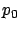
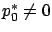

Next: 6.1.2 Riccati differential equation
Up: 6.1 Finite-horizon LQR problem
Previous: 6.1 Finite-horizon LQR problem
Contents
Index
6.1.1 Candidate optimal feedback law
We begin our analysis of the LQR problem by inspecting the necessary conditions for optimality provided by the maximum principle. After some further manipulation, these conditions will reveal that an optimal control must be a linear state feedback law.
The Hamiltonian is given by
Note that, compared to the general formula (4.40) for the Hamiltonian, we took the
abnormal multiplier 
to be equal to  . This is no loss of generality because, for the present free-endpoint problem in the Bolza form, a combination of the results in Section 4.3.1 would give us the transversality condition
. This is no loss of generality because, for the present free-endpoint problem in the Bolza form, a combination of the results in Section 4.3.1 would give us the transversality condition
 which, in light of the nontriviality condition, guarantees that
which, in light of the nontriviality condition, guarantees that

.
It is also useful to observe that the LQR problem can be adequately treated with the variational approach of Section 3.4, which yields essentially the same necessary conditions as the maximum principle but without the abnormal multiplier appearing. Indeed, the control is unconstrained, the final state is free, and  is quadratic--hence twice differentiable--in
is quadratic--hence twice differentiable--in  ; therefore, the technical issues discussed in Section 3.4.5 do not arise here. In Section 3.4 we proved that along an optimal trajectory we must have
; therefore, the technical issues discussed in Section 3.4.5 do not arise here. In Section 3.4 we proved that along an optimal trajectory we must have
 and
and
 , which is in general different from the Hamiltonian maximization condition, but in the present LQR setting this difference disappears as we will see in a moment. In fact, when solving part a) of Exercise 3.8, the reader should have already written down the necessary conditions for optimality from Section 3.4.3 for the LQR problem (with
, which is in general different from the Hamiltonian maximization condition, but in the present LQR setting this difference disappears as we will see in a moment. In fact, when solving part a) of Exercise 3.8, the reader should have already written down the necessary conditions for optimality from Section 3.4.3 for the LQR problem (with  ). We will now rederive these necessary conditions and examine their consequences in more detail.
). We will now rederive these necessary conditions and examine their consequences in more detail.
The gradient of
with respect to
is
 , and along an optimal trajectory it must vanish. Using our assumption that
, and along an optimal trajectory it must vanish. Using our assumption that  is invertible for all
is invertible for all  , we can solve the resulting equation for
and conclude that an optimal control
, we can solve the resulting equation for
and conclude that an optimal control  (if it exists) must satisfy
(if it exists) must satisfy
 |
(6.3) |
Moreover, since
 , the above control indeed maximizes the Hamiltonian (globally). We see that (6.3) is the unique control satisfying the necessary conditions, although we have not yet verified that it is optimal.
, the above control indeed maximizes the Hamiltonian (globally). We see that (6.3) is the unique control satisfying the necessary conditions, although we have not yet verified that it is optimal.
Since the formula (6.3) expresses
in terms of the costate  , let us
look at
more closely. It satisfies the adjoint equation
, let us
look at
more closely. It satisfies the adjoint equation
 |
(6.4) |
with the boundary condition
 |
(6.5) |
(see Section 4.3.1), where  is the optimal state trajectory. Our next goal is to show that
a linear relation of the form
is the optimal state trajectory. Our next goal is to show that
a linear relation of the form
 |
(6.6) |
holds for
all
and not just for  , where
, where  is some matrix-valued function to be determined. Putting together the dynamics (6.1) of the state, the control law (6.3), and the dynamics (6.4) of the costate, we can write the system of canonical equations in the following combined closed-loop form:
is some matrix-valued function to be determined. Putting together the dynamics (6.1) of the state, the control law (6.3), and the dynamics (6.4) of the costate, we can write the system of canonical equations in the following combined closed-loop form:
 |
(6.7) |
The matrix
 is sometimes called the Hamiltonian matrix.
Let us denote the transition matrix for the linear time-varying system (6.7) by
is sometimes called the Hamiltonian matrix.
Let us denote the transition matrix for the linear time-varying system (6.7) by
 . Then we have, in particular,
. Then we have, in particular,
 ; here
; here
 propagates the solutions backward in time from
propagates the solutions backward in time from  to
.
Partitioning
to
.
Partitioning  into
into  blocks as
blocks as
gives the more detailed relation
which, in view of the terminal condition (6.5), can be written as
Solving (6.8) for  and plugging the result into (6.9),
we obtain
and plugging the result into (6.9),
we obtain
We have thus established (6.6) with
 |
(6.10) |
A couple of remarks are in order. First, we have not yet justified
the existence of the inverse in the definition of  . For now, we note that
. For now, we note that
 , hence
, hence
 ,
,
 , and
so
, and
so
 . By continuity,
. By continuity,
 stays invertible for
close enough to
, which means that
is well defined at least
for
near
. Second, the minus sign and the factor of
stays invertible for
close enough to
, which means that
is well defined at least
for
near
. Second, the minus sign and the factor of  in (6.10), which stem from the factor of
in (6.10), which stem from the factor of  in (6.6), appear to be somewhat arbitrary at this point. We see from (6.5)
and (6.6) that
in (6.6), appear to be somewhat arbitrary at this point. We see from (6.5)
and (6.6) that
 |
(6.11) |
The reason for the above conventions will become clear later, when we show that
is symmetric positive semidefinite for all
(not just for
) and is directly related to the optimal cost.
Combining (6.3) and (6.6),
we deduce that the optimal
control must take the form
 |
(6.12) |
which, as we announced earlier, is a linear state feedback law. This is a remarkable conclusion, as it shows that the optimal closed-loop system must be linear.6.1 Note that the feedback gain
in (6.12) is time-varying even if the system (6.1) is time-invariant, because  from (6.10) is always time-varying.
We remark that we could just as easily derive an open-loop formula for
by writing (6.8) with
from (6.10) is always time-varying.
We remark that we could just as easily derive an open-loop formula for
by writing (6.8) with  in place of
, i.e.,
in place of
, i.e.,
 ,
solving it for
and plugging the result into (6.9) to arrive at
,
solving it for
and plugging the result into (6.9) to arrive at
(provided that the inverse exists), and then using this expression in (6.3). However, the feedback form of
is theoretically revealing and leads to a more compact description of the closed-loop system.
As we said, there are two things that we still need to check: optimality of the control
that we found, and global existence of the matrix
. These issues will be tackled in Sections 6.1.3 and 6.1.4, respectively. But first, we want to obtain a nicer description for the matrix
, as the formula (6.10) is rather clumsy and not very useful (since calculating the transition matrix
analytically is in general impossible).
Next: 6.1.2 Riccati differential equation
Up: 6.1 Finite-horizon LQR problem
Previous: 6.1 Finite-horizon LQR problem
Contents
Index
Daniel
2010-12-20